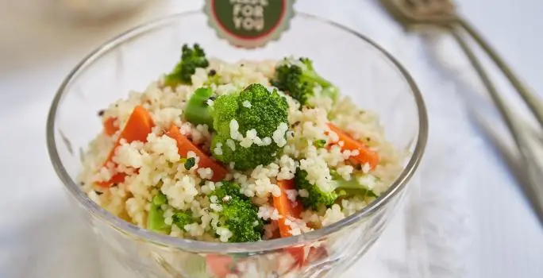

Cuscús
Dificultad: Desafiante
Rinde 4 porciones
Ingredientes
| Ingredientes | Cantidad |
|---|---|
| Cuscús | 1 Taza |
| Caldo De Verduras Maggi | 1/4 Taza |
| Zanahorias | 2 Unidades |
| Brócoli | 2 Tazas |
| Aceite De Oliva Extra Virgen | 2 Cucharadas |
| Sal | 1 Pizca |
| Pimienta | 1 Pizca |
¡A cocinar!
- Hidratar el cuscús con el Caldo de Verduras MAGGI hirviendo. Dejar reposar hasta que absorba todo el líquido.
- Blanquear las zanahorias cortadas en medias rodajas y las flores de brócoli.
- Una vez hidratado el cuscús, incorporar los vegetales fríos y condimentar con el aceite de oliva, sal y pimienta.
- Tip: el cuscús se elabora a partir de la sémola de trigo por lo tanto no es apto celíacos. Rico en hidratos de carbono complejos, fuente de energía.
- TIP: Las ensaladas deben formar parte del menú diario familiar. Variadas y coloridas, aportan nutrientes importantes para mantenerse saludable. Los niños necesitan menos calorías, por eso, sus porciones serán más pequeñas que las porciones de los adultos.